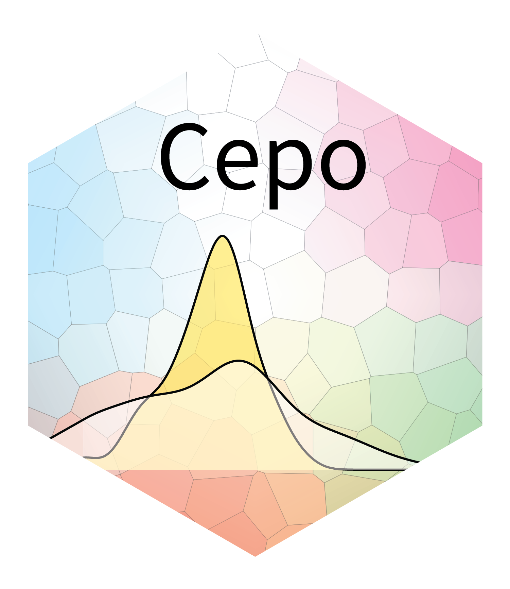

Defining the identity of a cell is fundamental to understand the heterogeneity of cells to various environmental signals and perturbations. We present Cepo, a new method to explore cell identities from single-cell RNA-sequencing data using differential stability as a new metric to define cell identity genes. Cepo computes cell-type specific gene statistics pertaining to differential stable gene expression.
Installation
You can install the development version of Cepo that can be installed from GitHub using the remotes package:
# install.packages("remotes")
remotes::install_github("PYangLab/Cepo")To also build the vignettes use:
# install.packages("remotes")
remotes::install_github("PYangLab/Cepo", dependencies = TRUE,
build_vignettes = TRUE)NOTE: Building the vignettes requires the installation of additional packages.
Documentation
The documentation for Cepo is available from http://github.com/PYangLab/Cepo
To view the vignette and all the package documentation for the development version visit http://github.com/PYangLab/Cepo.
Citing Cepo
If you use Cepo in your work please cite our preprint "Kim H.J., Wang K., Yang P. Cepo uncovers cell identity through differential stability. bioRxiv DOI:.
To find all source code related to the anlayses of our preprint please refer to http://github.com/PYangLab/CepoManuscript.
Developers
The following individuals were involved in developing the Cepo package:
-
@HaniJieunKim
(https://github.com/HaniJieunKim) -
@kevinwang09
(https://github.com/kevinwang09) -
@PYangLab
(https://github.com/PYangLab)
Contact us
If you have any enquiries, especially about using Cepo to analyse your data, please contact hani.kim@sydney.edu.au. We actively welcome any feedback and suggestions!